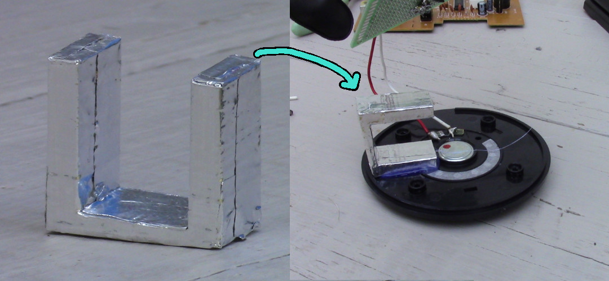
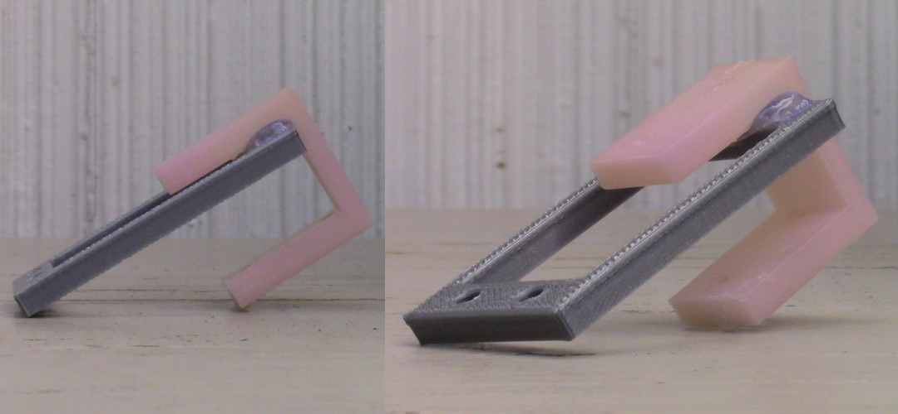

Social Distance Sensor Construction
The microcontroller that I decided to use in this project was a Digispark. Any small micro controller should work, but I chose the Digispark because it is inexpensive, and I had a few of them lying around. The Digispark does not come with pre-soldered headers, so I needed to solder them on by hand.
I secured the headers to a breadboard to keep them and the Digispark from moving while I soldered them.
I didn't do a particularly clean job, but at least I didn't short anything.
Here is the circuit diagram.
An HC-SR04 ultrasonic sensor is used to measure range. The sensor's trigger and echo pins are connected to pin 0 and 3 of the Digispark respectively. There is also a speaker connected to pin 1 and grounded via a 22k Ohm resister. Different speakers may require different resister values (I used a speaker from a broken pair of headphones). The speaker could also be replaced by a piezo buzzer (also needing a different resister).

I put together a prototype to test the concept. It certainly would not fit on the side of a mask, but it allowed me to troubleshoot the electronics and software.

Here is the completed Arduino program. It causes the speaker to emit a tone when the HC-SR04 detects an surface within six feet. The pitch of the tone becomes higher as the distance to the surface becomes smaller.
void setup() {
//Serial.begin(9600);
pinMode(0, OUTPUT);
pinMode(1,OUTPUT);
pinMode(3,INPUT);
}
void loop() {
//define integers
int duration;
double distance;
//send ping
digitalWrite(0,HIGH);
delayMicroseconds(3000);
digitalWrite(0,LOW);
//wait for pig to be received and find the time of arrival
duration=pulseIn(3,HIGH);
//calculate the distance in inches
distance=duration/2/73.91;
if (distance < 72 && distance > 3) {
//Generate a tone proportional to the measured distance
tone(1, (72-distance)*20);
} else {
//Stop generating a tone
noTone(1);
}
/*Serial.print(distance); //Serial print distances
Serial.print(" ft\n");
delay(200);*/
}
Uploading a program to the Digispark can be a bit troublesome, but I will not document that in detail here. Suffice it to say, http://digistump.com/package_digistump_index.json must be added to the 'Additional Board Manger URLs, Digistump boards must be added in the Boards Manager, and the Digispark must be plugged into the computer after the Upload process has already begun.

The program worked, so I disassembled the prototype and began to construct a version that can be worn on the side of a mask. I began by soldering most everything to a 14x20 protoboard. I added headers for both the Digispark and HCSR-04 so that I can remove them if I need to.

Oops, I forget to add a power switch. I never did add one to the prototype. I will salvage one from this thing.
Here is the place from which I desoldered the switch and a picture of the switch itself.
After I soldered the switch onto the device, I also added some hot glue to the connections so that they will be especially robust because they will have to flex when the battery is changed. I also used hot glue to affix the switch to the top of the protoboard.
I needed something to hold the battery and protoboard to the speaker. I would 3D print a custom part for this, but the facility at which I normally 3D print parts is closed due to the pandemic.
However, I have a bin of discarded 3D printed parts in which I found a part that worked. It was meant to be one of VORP's motor holders, but apparently it was warped and discarded. At some point in the past, I must have covered it with aluminum tape for some reason. If it were not warped and covered in tape, it may not have ended up holding the batter as well as it did.
Then I took some nice pictures of it for some reason. Perhaps I forgot that it wasn't finished?
Then I needed to find a way to strap the device to a mask. I considered adding a Velcro strap, but I decided to use a plastic hook instead.
I found another two discarded 3D printed parts that worked. One is another discarded VORP motor mount, and the other is a test print for a servo mount.
I thought that the VORP motor mount was white, but I discovered that it is really light sensitive color changing plastic. It looks white inside, but in the sun, it becomes pink.
I used hot glue to construct a hook from them.
Then I used hot glue to attach that hook to the speaker
Here are some images of the finished device
Here is one final, large image. I should probably also include an image of it attached to a mask, but I do not have one yet.